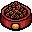
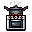
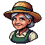

MissõesFredoka 600 · 24 · título (um por tela)
Petisco de cenoura · 2.645Fredoka 600 · 18 · nomes, números, botões
Bora plantar as primeiras cenouras?Nunito 700 · 15 · texto
1 min · 3/6 · ComidaNunito 800 · 12 · legenda
Pixel = coisa do mundo



Tiro, personagens, mapas, itens, comidas, estações, abas
Liso = o que você toca
Fechar, ajuda, cadeado, pronto, ajustes, tempo, setas, + e −